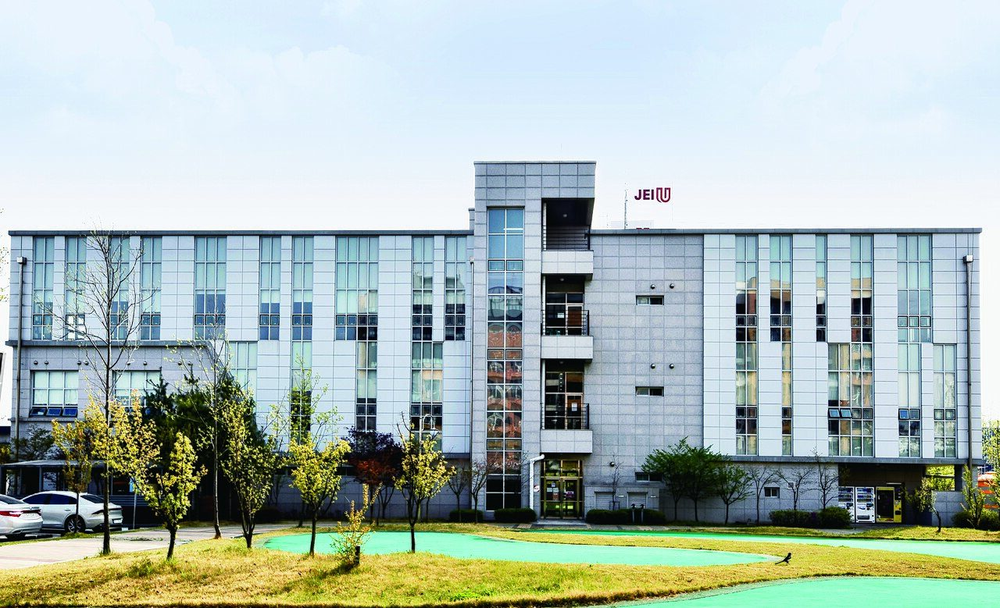
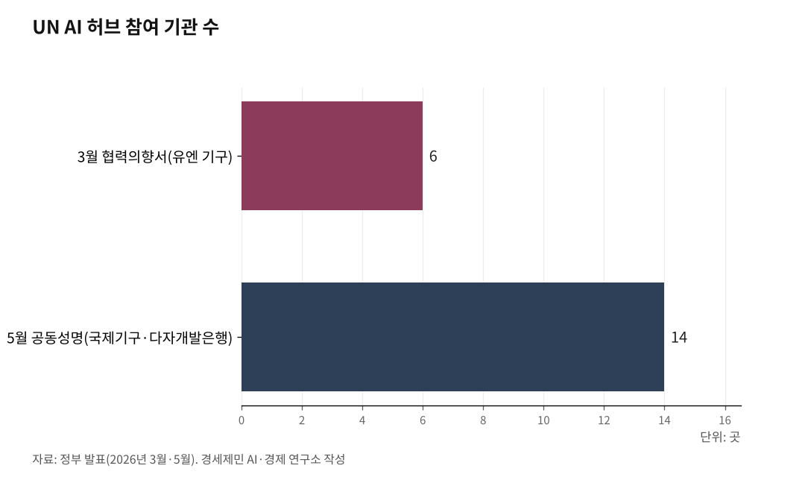

국제기구 도시 송도, UN AI 허브 최적지… 박찬대 앞장서
국제기구 집적도시 송도, UN 글로벌 AI 허브 최적지
박찬대 당선인, 민선 9기 핵심 과제로 유치 추진
정부도 범정부 체계로 뒷받침… 경쟁 도시도 뛴다
UN 글로벌 AI 허브 유치는 인천시 혼자 하는 일이 아니다. 박찬대 인천시장 당선인이 민선 9기 핵심 과제로 내걸었고, 중앙정부는 지난 3월 범정부 추진 체계를 세웠다. 국제기구가 모인 송도가 그 무대다.

정부가 국가 과제로 나선 일에, 인천이 도시 강점으로 답하는 구도다. 유치는 이미 출발했다. 어디까지 왔는지 짚는다.
1. 유치는 이미 출발했다
박찬대 당선인은 송도 글로벌 AI 허브 유치를 민선 9기 핵심 과제로 제시했다. 6·3 지방선거 공약부터 당선 뒤 비전까지 한 줄기로 이어졌다(①편 참조).
박 당선인은 AI를 산업으로만 보지 않는다. 그는 6월 21일 "AI는 단순한 산업이 아니라 의료·보건·기후위기 등 인류가 직면한 문제를 해결하는 핵심 도구"라고 했다.
당선인은 송도를 "국제기구가 모여 있는 가장 성공적인 국제도시"로 부른다. 녹색기후기금(GCF)을 비롯한 국제기구가 모여 있고, 국제학교와 외국인 정주 환경, 글로벌 협력 기반도 갖췄다는 것이다. 국제기구를 받아 직접 운영해본 도시라는 점이 다른 도시에는 없는 강점이다.
정부도 같은 방향이다. 2026년 3월 중앙정부가 유치를 공식화하고 6개 유엔 기구와 협력의향서(LOI·협력 의사를 담은 문서)까지 맺었다.
당선인과 정부가 한 방향으로 움직인다. UN AI 허브는 인천시 혼자 밀어붙이는 사업이 아니다.

2. 정부가 세운 범정부 추진 체계
2026년 3월 10일 김민석 국무총리가 정부서울청사에서 'UN AI 허브 유치지원 전담팀(TF)' 회의를 주재하고 유치를 공식화했다. 유치위원회 위원장은 김 총리, 간사는 차지호 더불어민주당 의원과 김우창 대통령실 국가AI정책비서관이 맡았다.
김 총리와 차 의원은 3월 16일과 17일 미국 뉴욕과 스위스 제네바를 찾아 유엔 사무총장과 전문기구 수장들을 만났다. 17일에는 김 총리 임석 아래 제네바에서 6개 유엔 기구와 협력의향서에 서명했다.
여섯 기구는 노동·이주·통신·보건·식량·개발을 맡는다. 국제노동기구(ILO)·국제이주기구(IOM)·국제전기통신연합(ITU)·세계보건기구(WHO)·세계식량계획(WFP)·유엔개발계획(UNDP)이다. 한국 대표로 류제명 과학기술정보통신부 2차관이 서명했다.
다만 김민석 총리는 6월 7일 사의를 표명했다. 이재명 대통령이 한성숙 중소벤처기업부 장관을 신임 총리 후보자로 지명해 인사청문 절차가 진행 중이다.
추진 체계는 총리 한 사람이 아니라 범정부로 짜였다. 총리가 바뀌어도 유치위원회 틀은 이어진다.
3. 6개 기구에서 14개 기관으로 넓어진 판
3월 24일 김 총리는 제1차 유치위원회 회의 겸 대국민 보고에서 '모두를 위한 AI(AI for All)' 비전을 내놨다.
의제는 빠르게 넓어졌다. 4월 16일 구윤철 부총리 겸 재정경제부 장관은 미국 워싱턴에서 'K-AI 허브'를 발표하며 "유엔의 AI 본부 역할도 가능하다"고 밝혔다.
5월 21일 서울에서 '글로벌 AI 허브 비전 선포식'이 열렸다. 국제노동기구 등 9개 국제기구와 세계은행·아시아개발은행 등 5개 다자개발은행이 함께 공동성명을 냈다. 3월 6개 유엔 기구에서 두 달 만에 참여 기관이 14곳으로 늘었다.
세계은행은 이미 2025년 12월 인천 송도에 글로벌 디지털 지식센터를 열어 운영하고 있다. 세계은행이 이런 센터를 해외에 둔 첫 사례다. 국제기구가 송도로 모이는 흐름은 이미 시작됐다.
4. 경쟁 도시도 뛰고 있다
인천만 뛰는 것이 아니다. 광주는 광주연구원이 5월 25일 공공 AI 기반시설과 민주·인권 가치, 문화적 포용성을 내세워 유치 당위를 폈다.
경북은 경북연구원이 경주에 거버넌스 본부, 포항에 데이터 본부를 두는 투트랙 전략을 제안했다. 전력자립률 215.6%(전국 1위)를 바탕으로 한 값싼 전기를 근거로 든다. 포항 글로벌 AI 데이터센터와 포스텍 연구망도 함께 내세운다.
유치 도시는 아직 정해지지 않았다. 먼저 준비하고 먼저 움직인 도시가 앞선다.
5. 이제 인천이 끌고 갈 때다
총리가 바뀌는 시기다. 중앙정부 추진 동력이 잠시 느슨해질 수 있다. 이런 때일수록 지방정부 역할이 크다.
박찬대 당선인은 7월 1일 취임한다. 송도라는 국제기구 도시를 가진 인천이 유치를 앞에서 끌면, 중앙정부 추진 체계와 맞물려 힘을 키울 수 있다.
광주는 민주·인권 가치를, 경북은 값싼 전기를 내세운다. 인천은 국제기구를 실제로 품고 12년간 운영해온 경험을 내세운다(①편 참조). 가치도 전기도 중요하지만, 국제기구 유치는 국제기구를 다뤄본 도시가 유리하다.
이 강점을 유치 동력으로 바꾸는 일이 지금 인천이 할 일이다.
참고문헌
· 「김민석 국무총리 주재 UN AI 허브 유치지원 TF 회의」, 대한민국 정책브리핑, 2026.3.10., https://www.korea.kr
· 「차지호 국회의원, 'UN AI Hub' 정부에 공식 유치 추진」, 기호일보, 2026.3., https://www.kihoilbo.co.kr
· 「김민석 총리, AI 글로벌 허브 유치위 주재…강력한 리더십으로 추진」, 머니투데이, 2026.3.24., https://www.mt.co.kr
· 「"한국을 UN의 AI 본부로"… 구윤철, 'K-AI 허브' 구상 발표」, 디지털타임스, 2026.4.17., https://www.dt.co.kr
· 「세계은행 글로벌 지식센터 한국에 개소」, 대한민국 정책브리핑, 2025.12., https://www.korea.kr
· 「「글로벌 AI 허브」 비전 선포식 개최」, 대한민국 정책브리핑(재정경제부), 2026.5.21., https://www.korea.kr
· 「김민석 국무총리 SNS로 공식 사의 표명」, 다음뉴스, 2026.6.7., https://v.daum.net
· 「이 대통령, 신임 국무총리 후보자에 한성숙 지명」, YTN, 2026.6.7., https://www.ytn.co.kr
· 「"AI·바이오·문화·에너지… 인천 미래는 ABC+E로 그린다"」, 파이낸셜뉴스, 2026.6.21., https://www.fnnews.com
· 「광주연구원 "UN AI 허브 유치해 광주 AI, 전세계로"」, 다음뉴스, 2026.5.25., https://v.daum.net
· 「경북연구원, 'UN AI 허브' 유치 공식 제안」, BBS 불교방송, 2026.4., https://news.bbsi.co.kr
※ 이 칼럼은 AI 프로그램 클로드를 활용해 작성했습니다.
사진 출처
· [대표사진] Gooddaeho, "재능대 송도캠퍼스 전경.jpg", 위키미디어 공용, CC0, https://commons.wikimedia.org/wiki/File:%EC%9E%AC%EB%8A%A5%EB%8C%80_%EC%86%A1%EB%8F%84%EC%BA%A0%ED%8D%BC%EC%8A%A4_%EC%A0%84%EA%B2%BD.jpg
※ 이 기사는 인공지능을 활용해 작성했습니다.
관련기사
- UN AI 허브, 인천 제조업 25만에 '국제 노동기준' 연다
- 박찬대가 건 송도 UN AI 허브, GCF 12년이 받친다
- 짓는 도시 아닌 운영하는 도시… 인천의 UN AI 허브 승부수
- UN AI 허브는 거대 데이터센터 아닌 'AI규범 UN기구'… 국제기구 클러스터 인천이 최적지
저작권자 © AI경세제민 무단전재 및 재배포, AI학습 및 활용 금지